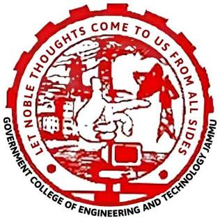

To emerge as a pioneer centre of research & technology imparting a greater contribution in “Nation-building” by including the intellectual potential, moral character and professional ethics among the aspiring young engineers so as to fulfil the vision of India as a “Developed Nation”

ABOUT OUR COLLEGE
GOVERNMENT COLLEGE OF ENGINEERING & TECHNOLOGY, is committed to providing quality education and creating opportunities for students to develop technical and professional skills. Our college provides a friendly learning environment, experienced faculty members, modern laboratories and various extracurricular activities.